![[DBPP]](pictures//asm_color_tiny.gif)


![[Search]](pictures//search_motif.gif)
The techniques described here for constructing distributed random number generators are based on an adaptation of the linear congruential algorithm called the random tree method. We first show how this method can be applied to a single generator to construct a tree of generators in a deterministic and reproducible fashion. This facility is particularly valuable in computations that create and destroy tasks dynamically during program execution.
The random tree method employs two linear congruential generators, L and R , that differ only in the values used for a .
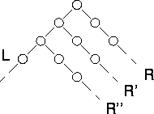
Figure 10.1: The random tree method. Two generators are
used to construct a tree of random numbers. The right generator is
applied to elements of the sequence L
generated by the left
generator to generate new sequences R
, R'
,
R''
, etc.
Application of the left generator L to a seed 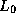 generates one random sequence; application of the right generator R to the same seed generates a different sequence. By applying the right generator to elements of the left generator's sequence (or vice versa), a tree of random numbers can be generated. By convention, the right generator R is used to generate random values for use in computation, while the left generator L is applied to values computed by R to obtain the starting points 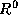, 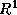, etc., for new right sequences (Figure 10.1).
The strength of the random tree method is that it can be used to generate new random sequences in a reproducible and noncentralized fashion. This is valuable, for example, in applications in which new tasks and hence new random generators must be created dynamically. Before creating a new task, a parent task uses the left generator to construct a new right generator, which it passes to its new offspring. The new task uses this right generator to generate the random numbers required for its computation. If it in turn must generate a new task, it can apply the left generator to its latest random value to obtain a new random seed.
A deficiency of the random tree method as described here is that there is no guarantee that different right sequences will not overlap. The period of R is usually chosen to be near to m , because this maximizes the quality of the random numbers obtained by using the generator. Hence, the starting points 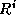 returned by the left generator are likely to be different points in the same sequence, in which case we can think of L as selecting random starting points in the sequence constructed by R . If two starting points happen to be close to each other, the two right sequences that are generated will be highly correlated.
In some circumstances, we may know that a program requires a fixed number of generators. (For example, we may require one generator for each task in a domain decomposition algorithm.) In this case, a variant of the random tree method called the leapfrog method can be used to generate sequences that can be guaranteed not to overlap for a certain period.
Let n be the number of sequences required. Then we define 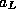 and 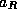 as a and , respectively, so that we have
Then, we create n different right generators ..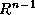 by taking the first n elements of L as their starting values. The name ``leapfrog method'' refers to the fact that the i th sequence consists of 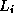 and every n th subsequent element of the sequence generated by L (Figure 10.2). As this method partitions the elements of L , each subsequence has a period of at least P/n , where P is the period of L . (If n divides P , then the period of a subsequence is exactly P/n .) In addition, the n subsequences are disjoint for their first P/n elements.
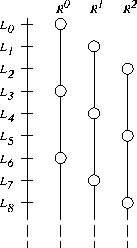
Figure 10.2: The leapfrog method with n=3
. Each of the three right
generators selects a disjoint subsequence of the sequence constructed
by the left generator's sequence.
The generator for the r
th subsequence, , is defined by
and 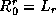. We can compute these values as follows.
We first compute and  ; these computations can be performed
in 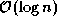 time by taking advantage of the identity
; these computations can be performed
in 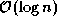 time by taking advantage of the identity
We then compute members of the sequence as follows, to obtain n generators, each defined by a triple 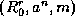, for 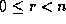.
The leapfrog method can be applied recursively: the subsequence corresponding to a generator can be further subdivided by a second application of the leapfrog method. Doing this can be useful when random numbers are required at several levels in a task hierarchy. However, the periods of the resulting sequences become shorter, and their statistical properties are less certain.
In other situations, we may know the maximum number, n , of random values needed in a subsequence but not the number of subsequences required. In this case, a variant of the leapfrog method can be used in which the role of L and R are reversed so that the elements of subsequence i are the contiguous elements 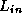..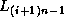 (Figure 10.3), as follows:
It is not a good idea to choose n as a power of two, as this can lead to serious long-term correlations.
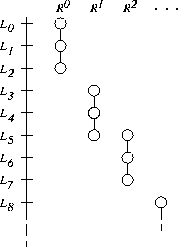
Figure 10.3: Modified leapfrog with n=3
. Each subsequence contains
three contiguous numbers from the main
sequence.
© Copyright 1995 by Ian Foster